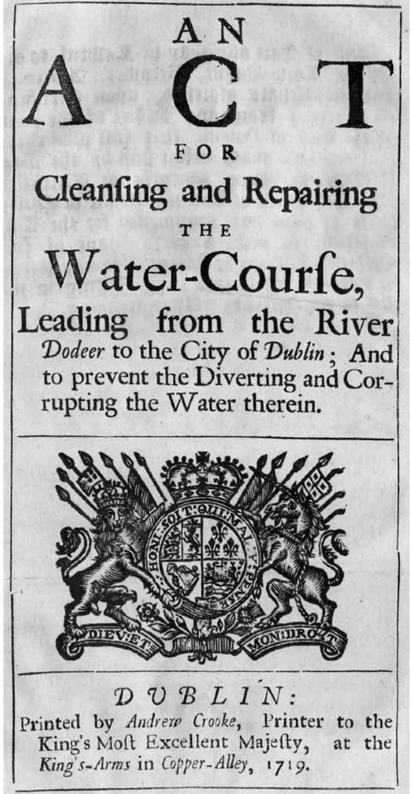

History · 1719
The 1719 Act
Parliament acts to clean up the city’s water.
The 1719 Act of Parliament
An Act of Parliament of 1719 describes the watercourse as “the chief supply of water not only for the inhabitants of the said city; but also for this majesties Castle of Dublin, and without which it would suffer exceeding great prejudice.”
The Act provided for cleaning and repairing the watercourse, because:
“…tuck mills, in which urine, soap and other unwolsome materials are made use of, and diers of linnen and woolen cloath and yarn, and skinners dip, wash, scour and cleanse great quantities of died linnen and woolen cloath, yarn and skins in the said water-course, by which the water is greatly corrupted, endangering the healths of the inhabitants of the said city.”Original 1719 spelling
Mills along the watercourse were also a problem, building dams and ponds that blocked the flow of water into the city.
From the planning file
Facts from the flood scheme’s planning application and four local planning files.
